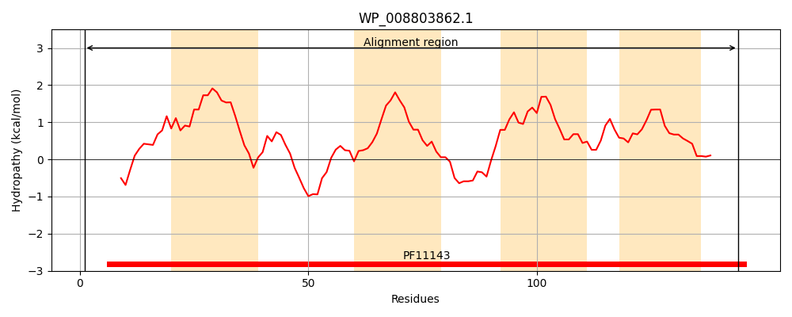
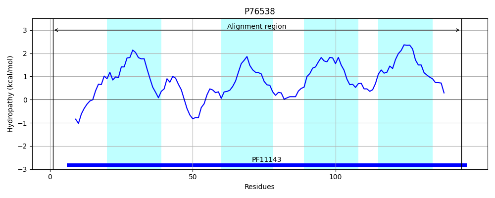
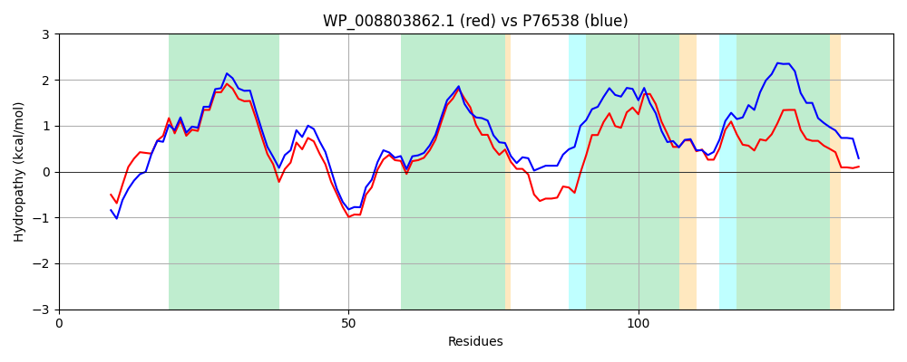

Hit Accession: P76538
Hit TCID: 9.B.127.1.1
Hit Description: gnl|BL_ORD_ID|11475 gnl|TC-DB|P76538|9.B.127.1.1 Inner membrane protein yfeZ OS=Escherichia coli (strain K12) GN=yfeZ PE=1 SV=2
Mach Len: 144
e:0.000000
Query TMS Count : 4
Hit TMS Count: 4
TMS-Overlap Score: 3.650000
Predicted Substrates:None
BLAST Alignment:
Score: 553 , Bit scores: 217 bits, E-value: 4.6e-74, Alignment length: 144, Percentage identity: 71
Query: 1 MKNTEFIPADFDAHGRLRLPLLFWCVLLLQARTWVLFLMAGASRQQGDAILNLFYPDHDRFWLGLLPGVPAVLAFLLSGYRQRLPRAWRAMRWLLVLSQLLLLLWQPMLWLSGESPSSLTIGLLVADGYALWWLLTSRRLGACF 144
MK+TEF P +DAHGRLRLPLLFW VLLLQARTWVLF++AGASR+QG A+LNLFYPDHD FWLGL+PG+PAVLAFLLSG R PR WR + +LL+L+Q++LL WQP LWL+GES S + + L+VAD AL WLLT+RRL ACF
Sbjct: 1 MKSTEFHPVHYDAHGRLRLPLLFWLVLLLQARTWVLFVIAGASREQGTALLNLFYPDHDNFWLGLIPGIPAVLAFLLSGRRATFPRTWRVLYFLLLLAQVVLLCWQPWLWLNGESVSGIGLALVVADIVALIWLLTNRRLRACF 144 | Protein Hydropathy Plots: |
|---|
|  |  |
Pairwise Alignment-Hydropathy Plot:
|
|---|
|  |